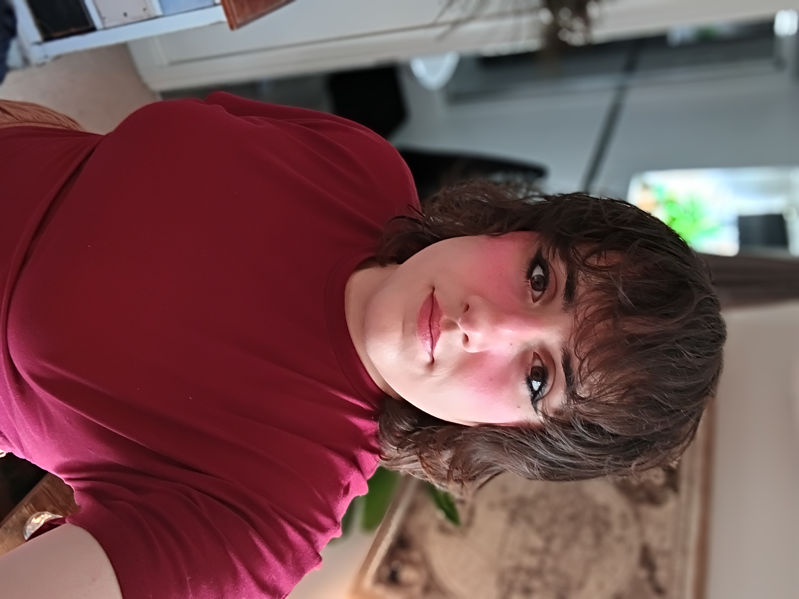

Warped
A demo of a text-to-speech tool for Unity, created as Luna’s MSc final project.
Game developer · AI & game systems
I’m Luna Lloyd, a game developer blending a background in AI with a love of making playful, unexpected worlds. Two self-published games are out now, with more on the way.

Made to be played
Two self-published games are available now. There’s more in development.
About the developer
I’m Luna Lloyd, a game developer with a BSc in Computer Science, specializing in AI, and an MSc in Game Development.
I bring together technical curiosity and a love of games to create interactive experiences. I’ve self-published two games so far: Warped, a Unity text-to-speech demo, and AmazeBalls, a time-trial maze game.
More games are in development. Follow along on itch.io.